Thumbnail Maker
Optional. Some channels pick their frames differently, and that choice is made before processing.
or
Select a frame
Preview
Click and drop to reframe the image — drag past the edge and the gap is filled in automatically
Title — Frame 1
Saved to this frame automatically. Tick thumbnails to batch-download them.
Edit preset
Applies to this frame. Natural is the default look.
Image overlay
Drag it on the canvas to move; drag its corner handle to resize.